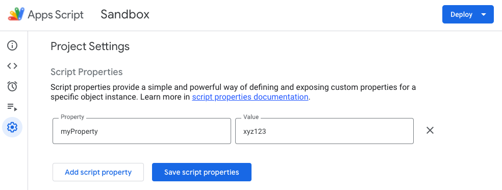

In Google Apps Script, script properties are a great way to persist key pieces of information for use across multiple script executions. Think of these properties as environment variables, which allow you to store and access small pieces of data quickly without having to store them in a database or in a Google Sheet.
In this post we will see how to:
- Create script properties manually
- Create properties programmatically
- Read properties inside a script
- Update or delete a property
Create script properties manually
The easiest way to add a script property to a Google Apps Script is to do so manually. Simply open Google Apps Script (either from the Extensions menu, if the script is bound to a Google Doc or a Google Sheet), or by double-clicking the file if it's a standalone script.
Next, click on the gear icon to access the "Project settings" page. Scroll down to the "Script Properties" section, and click the "Add script property" button. You will be prompted to enter a name for the property and the value that you wish to store. Once you do that, click "Save script properties" to finish, or "Add script property" to add another property. that's all there's to it.
Create properties programmatically
Sometimes you may need to add script properties dynamically while your script is running. Simply add the code below to your Apps Script:
try {
const propName = 'myProperty';
const propValue = 'xyz123';
const scriptProperties = PropertiesService.getScriptProperties();
scriptProperties.setProperty(propName, propValue);
} catch (err) {
console.log(`Failed setting property "${propName}": ${err.message}`);
}Above, we define the name and value of our script property. We get the script properties object and use its "setProperty" to create the property using our name and value. All of this runs in a try/catch block so that we can log any errors.
Bear in mind that regardless of how you create the property – whether manually or programmatically – it will persist for all users and all script executions until you delete it.
Read properties inside a script
The whole reason we create script properties is so that we can access them programmatically when the script is running. To read the property, use the code below:
try {
const scriptProperties = PropertiesService.getScriptProperties();
const myProp = scriptProperties.getProperty('myProperty');
// do something with myProp
} catch (err) {
console.log(`Failed getting property "myProperty": ${err.message}`);
}Update or delete a property
Finally, updating the value of an existing property or deleting the property altogether is equally simple:
try {
const scriptProperties = PropertiesService.getScriptProperties();
// Update the value of an existing property
scriptProperties.setProperty('myProperty', 'new value');
// Delete the property altogether
scriptProperties.deleteProperty('myProperty');
} catch (err) {
// TODO (developer) - Handle exception
console.log('Failed with error %s', err.message);
}